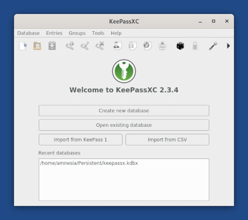

This release fixes many security vulnerabilities. You should upgrade as soon as possible.
Improvements to automatic upgrades
We worked on important improvements to the automatic upgrade feature, which is still one of your major pain points when using Tails:
Until now, if your version of Tails was several months old, you sometimes had to do 2 or more automatic upgrades in a row. For example, to upgrade from Tails 3.12 to Tails 3.16, you first had to upgrade to Tails 3.14.
Starting with 4.2, direct automatic upgrades will be available from all prior versions to the latest version.
Until now, you could only do a limited number of automatic upgrades, after which you had to do a much more complicated "manual" upgrade.
Starting with 4.2, you will only have to do a manual upgrade between major versions, for example to upgrade to Tails 5.0 in 2021.
We made automatic upgrades use less memory.
We optimized a bit the size of the download when doing automatic upgrades.
Nuove funzionalità
We included several command line tools used by SecureDrop users to analyze the metadata of leaked documents on computers that cannot use the Additional Software feature:
- PDF Redact Tools to redact and strip metadata from text documents before publishing
- Tesseract OCR to convert images containing text into a text document
- FFmpeg to record and convert audio and video
Changes and upgrades
Update Tor Browser to 9.0.3.
Update Thunderbird to 68.3.0.
Update Linux to 5.3.15.
Problemi risolti
Open ~/Persistent/keepassx.kdbx by default when starting KeePassX. If this database does not exist yet, stop pointing to it in the list of recent databases.

Per maggiori dettagli, leggi il nostro changelog.
Problemi noti
Nessuno che riguardi questo specifico rilascio.
Vedi la lista dei problemi noti da tempo.
Get Tails 4.2
Per aggiornare la propria chiavetta USB Tails e conservare il proprio volume persistente
Automatic upgrades are available from 4.0, 4.1, and 4.1.1 to 4.2.
Se non puoi eseguire un aggiornamento automatico o se Tails non si avvia dopo un aggiornamento automatico, ti preghiamo di provare a eseguire un aggiornamento manuale.
Per installare Tails su una nuova chiavetta USB
Follow our installation instructions:
All the data on this USB stick will be lost.
To download only
If you don't need installation or upgrade instructions, you can directly download Tails 4.2:
Cosa arriverà nelle prossime versioni?
Tails 4.3 is scheduled for February 11.
Dai un'occhiata alla nostra tabella di marcia (in inglese) per sapere a cosa stiamo lavorando.
We need your help and there are many ways to contribute to Tails (donating is only one of them). Come talk to us!